О.А.З.И.С
Органическое адаптивное земледелие и семеноводство
О.А.З.И.С — это не просто селекционно-семеноводческая компания. У нас своя земля и техника, своя селекция, свое производство. Мы растим с душой, работаем с идеями, движемся к новым горизонтам и свершениям.

Наша база
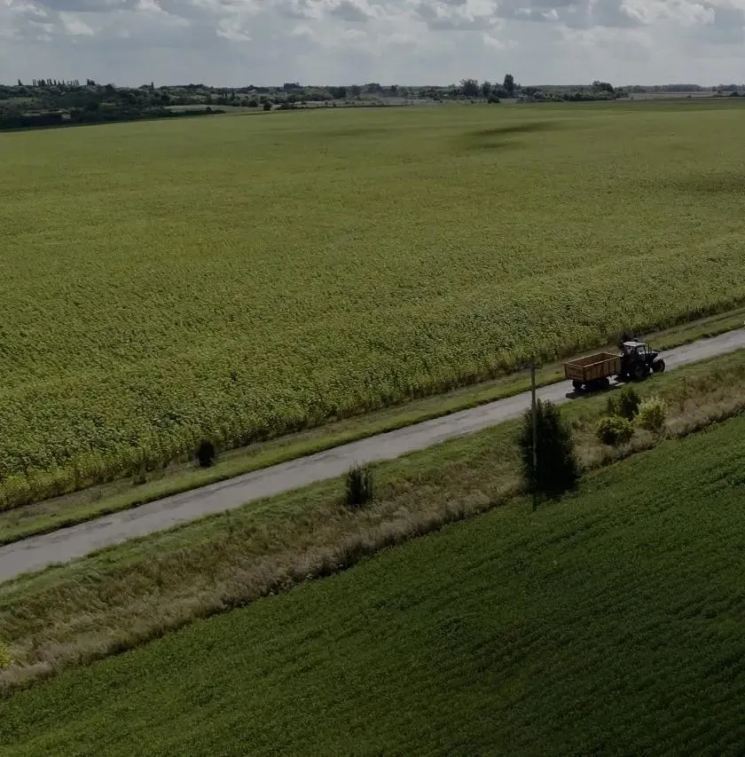
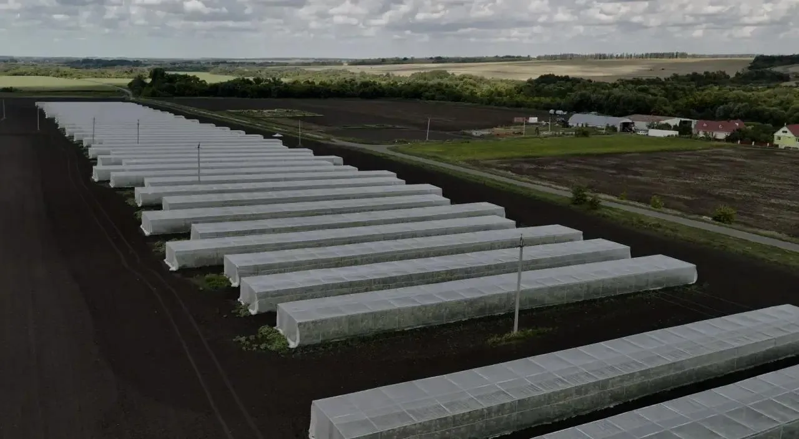
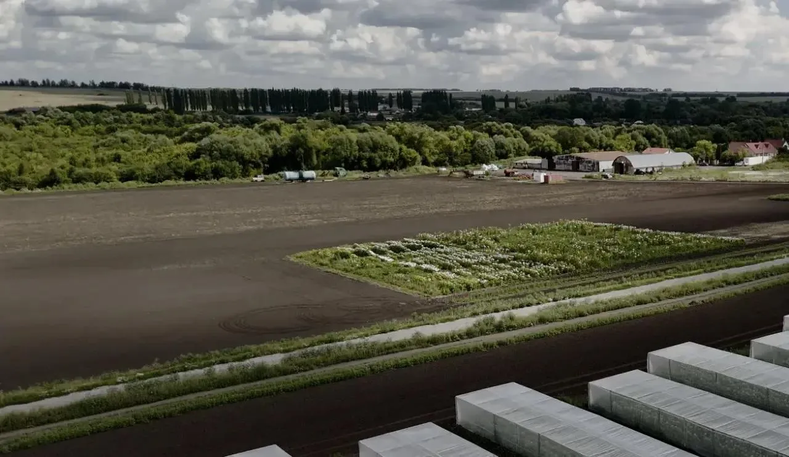
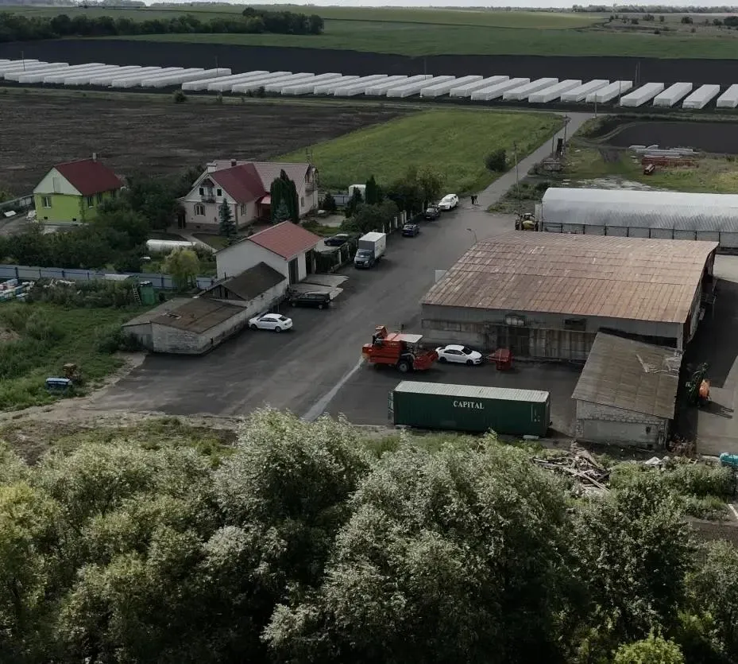
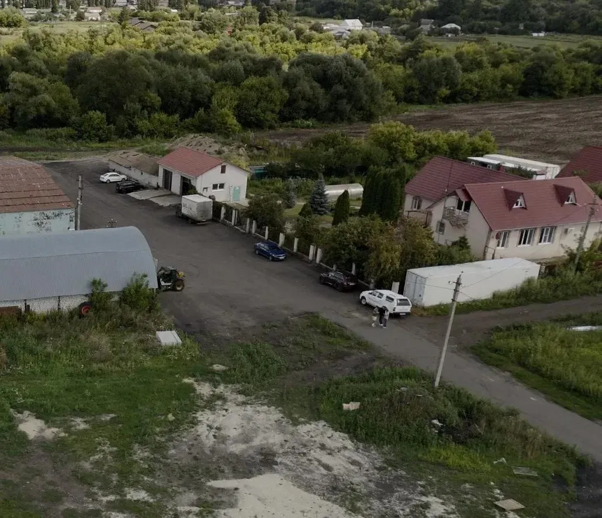
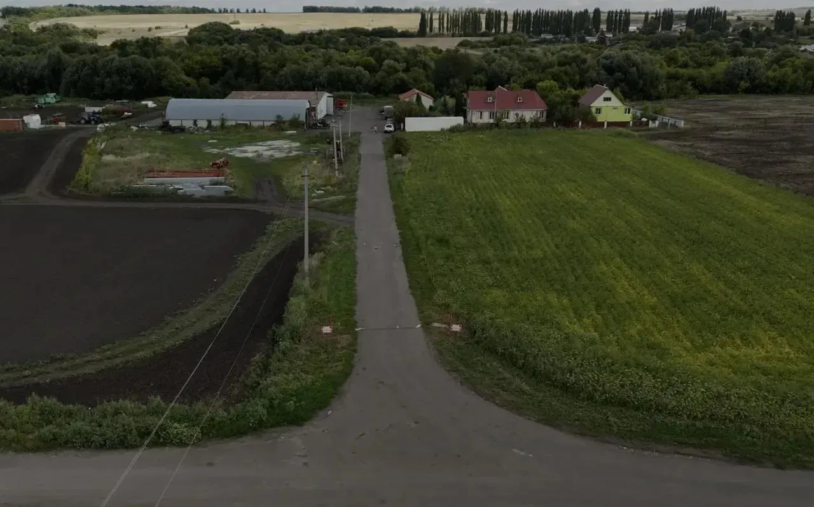
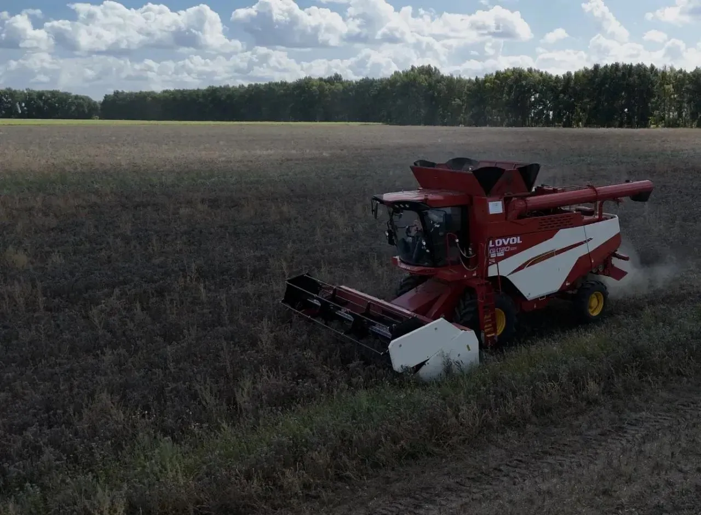
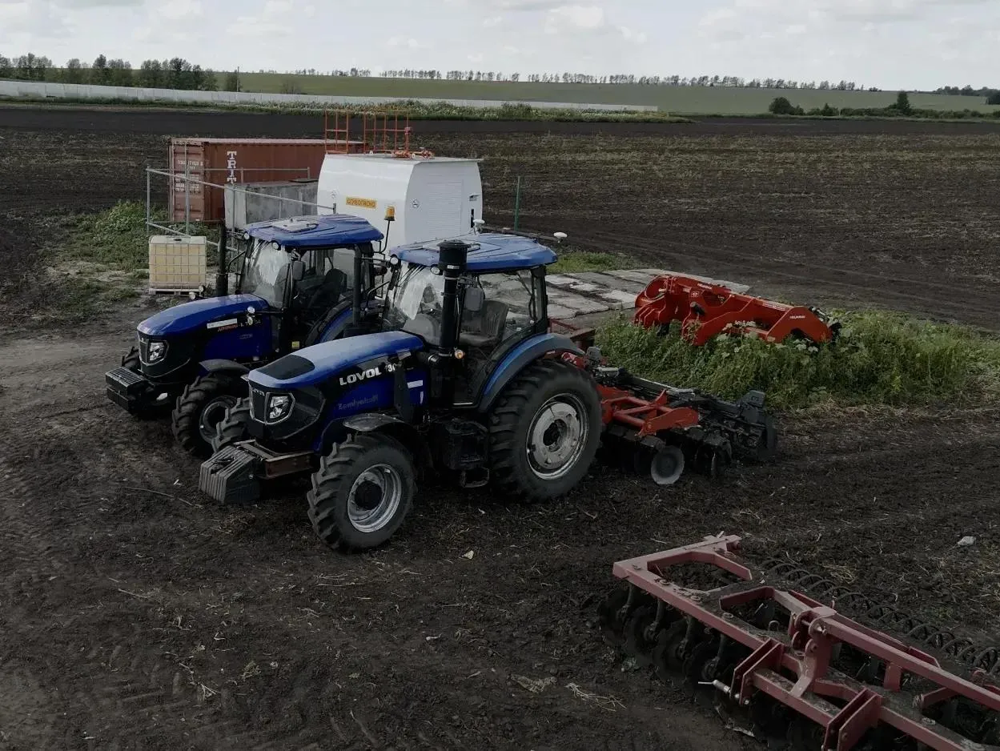
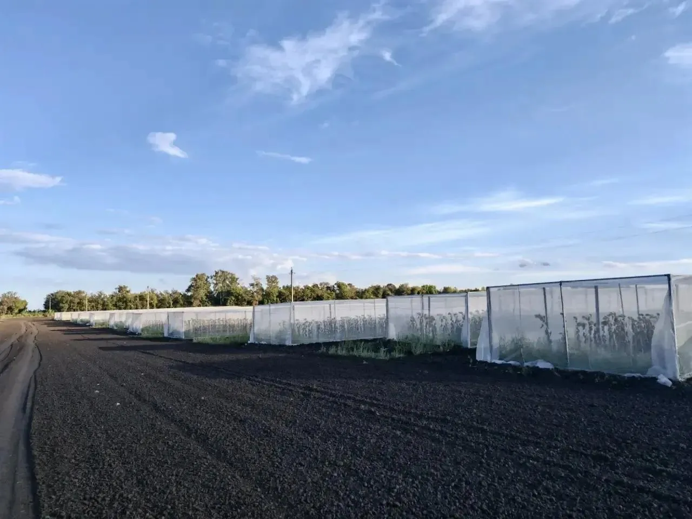
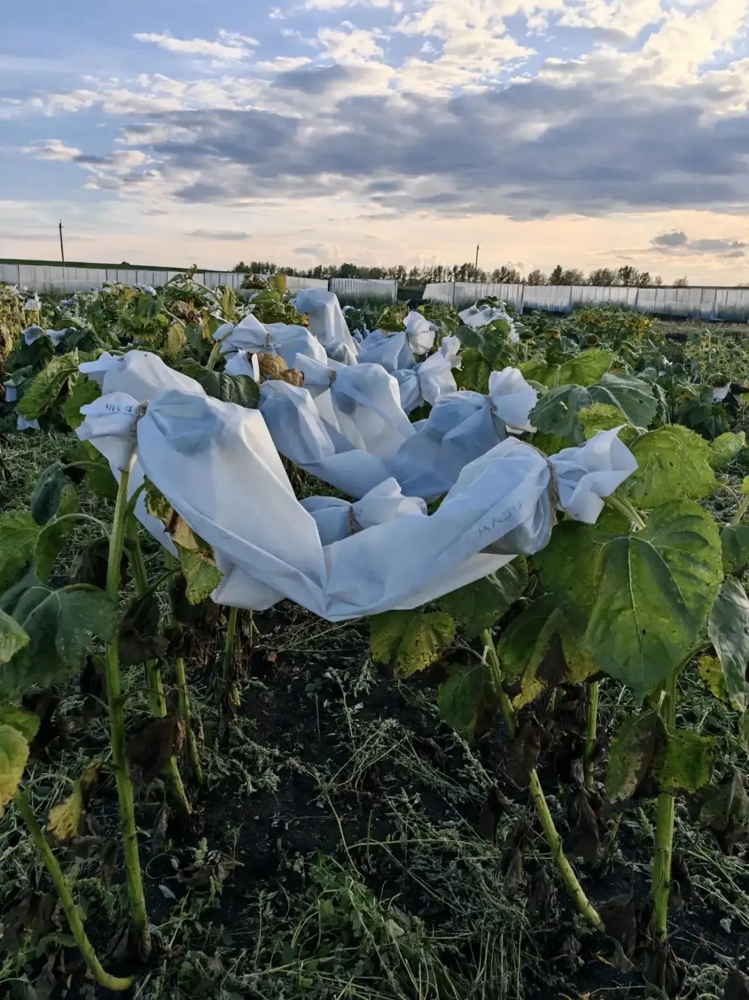
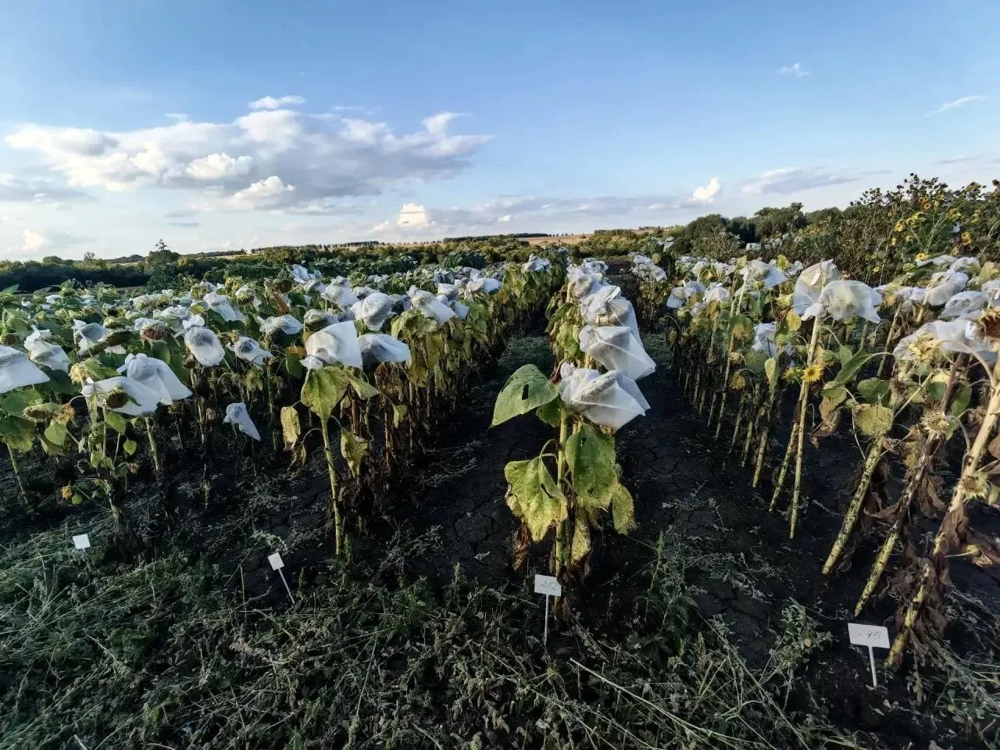
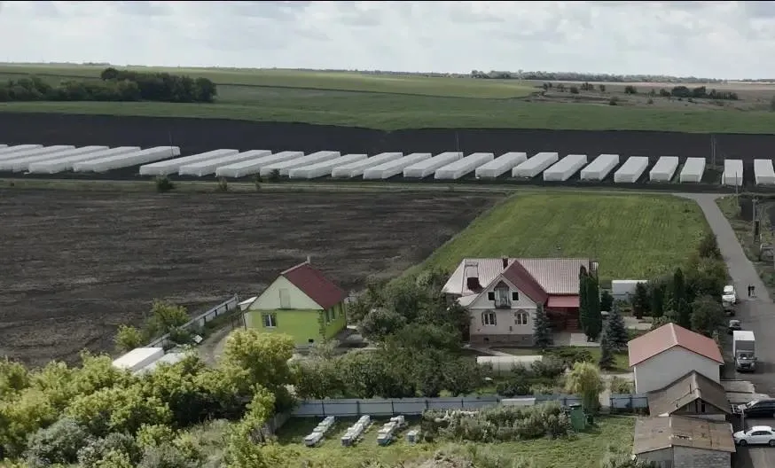
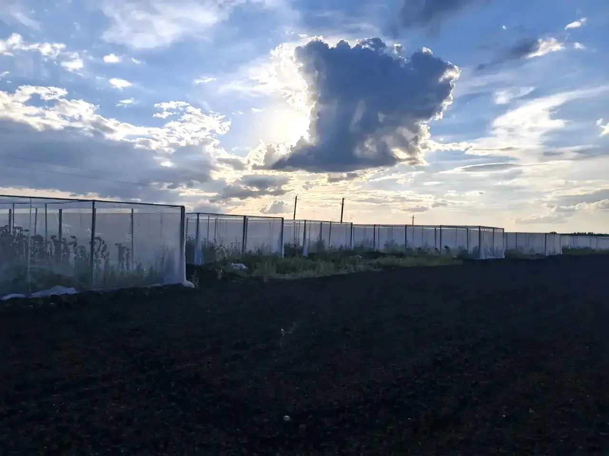
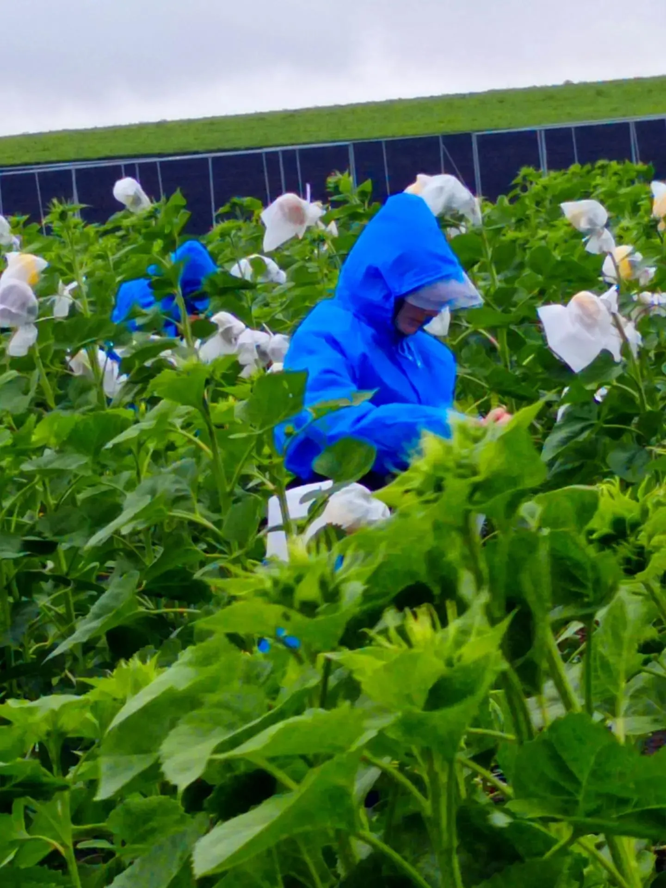
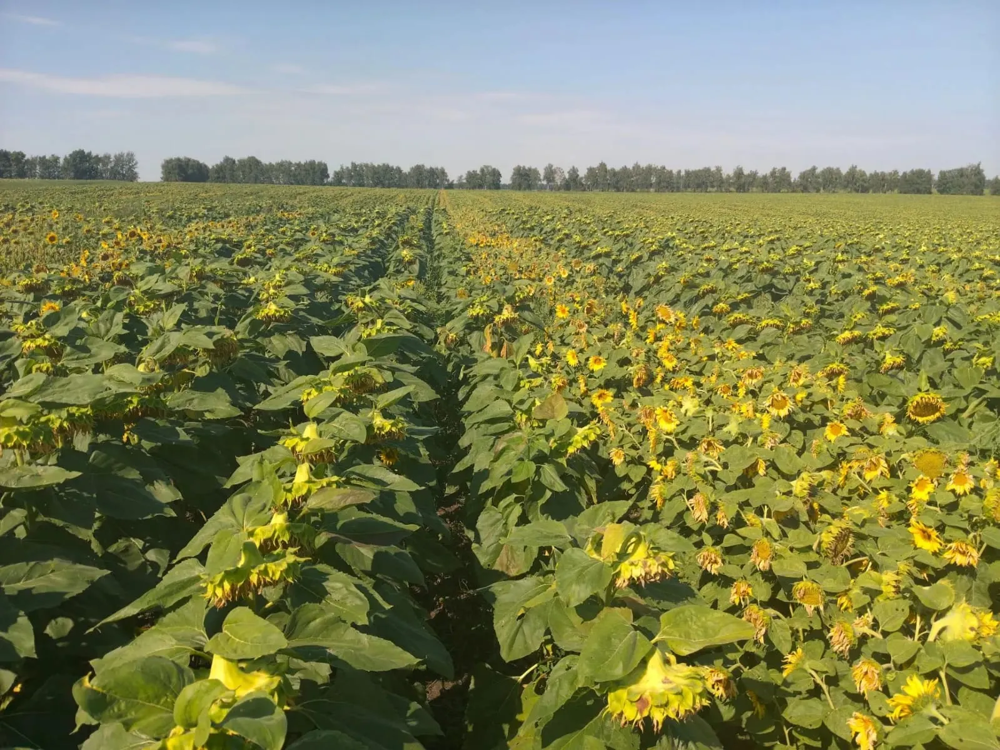